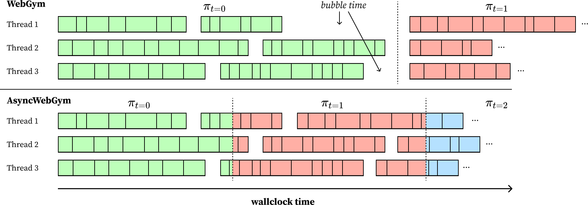
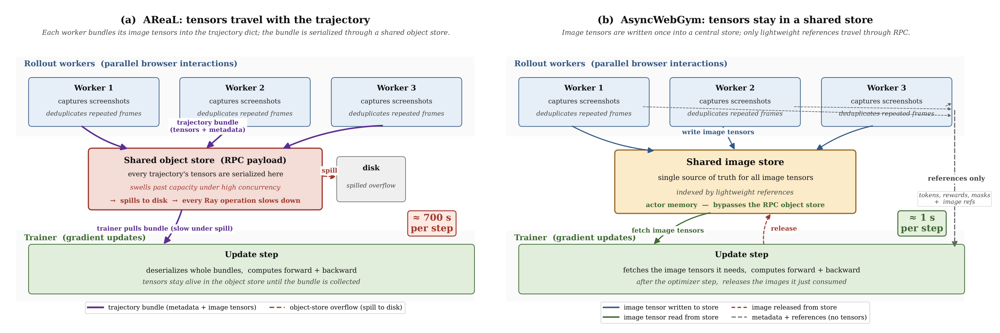

The first open multi-step RL framework for visual web agents that is fully async end-to-end. Overlaps rollout, gradient update, and policy refresh across iteration boundaries with an everlasting rollout pool (no warm-up bubble at every iteration boundary) and lightweight screenshot handling (image tensors stay in a dedicated in-memory actor; only references travel through RPC).
Two changes to the loss matter equally for multi-step agentic RL. (1) A decoupled importance-sampling ratio centers PPO clipping on a proximal policy, so the stale off-policy rollouts that async training produces stay usable — halving the clip-trigger rate. (2) A constant $1/k$ step normalizer replaces the per-trajectory $1/|\tau_i|$, the root cause of trajectory- and token-level inefficiency: failures average 12.5 steps vs. 5.1 for successes, so $1/|\tau_i|$ attenuates the negative gradient by ~2.4×. The constant contracts trajectories while preserving success, with the largest gains on Medium / Hard OOD.
Click each tab to switch view.


If you build multi-step agentic RL, two changes to the loss matter equally: (1) a decoupled importance-sampling ratio — clip on a proximal policy so the stale off-policy rollouts of async training remain usable (clip-trigger rate roughly halved), and (2) a constant $1/k$ step normalizer in place of the per-trajectory $1/|\tau_i|$ — so the loss stops under-weighting long failures and trajectories contract at matched success. Neither alone is enough.
From vanilla PPO to the AsyncWebRL loss — click each step to see the formula evolve.
Async RL learns from trajectories collected by a stale behavior policy $\pi_{\text{behave}}$, not the current $\pi_\theta$. A naive (coupled) importance ratio $\pi_\theta/\pi_{\text{behave}}$ drifts far from 1 under this off-policyness, so PPO's clip fires constantly and throws away the very samples async is producing — the throughput the system buys gets wasted on clipped gradients. Decoupling factors the ratio through a proximal policy $\pi_{\text{prox}}\!\approx\!\pi_\theta$ and centers clipping there, keeping stale rollouts usable. It is what makes multi-step async RL actually learn, and it is one of our two equally-important algorithmic ingredients alongside the constant $1/k$ normalizer.
At every step the WebGym agent writes a free-form, append-only Memory JSON — running notes it keeps about the task.
Memory: { "task": "Find a vegetarian dinner recipe with a photo and an ingredient list", "current_url": "https://www.foodnetwork.com/search/vegetarian-dinner", "candidate_recipe": "Baked Penne with Roasted Vegetables" } Progress: { "Open foodnetwork.com": "finished", "Search for a vegetarian dinner": "finished", "Open a candidate recipe": "not finished", "Verify photo + ingredient list": "not finished" } Intention: "Open a candidate recipe" Action: Click the "Baked Penne with Roasted Vegetables" search result. <tool_call>{"name": "click", "arguments": {"element": "Baked Penne with Roasted Vegetables"}}</tool_call>
Memory block included) plus the latest screenshot, and may only append to Memory — never edit earlier entries. So the notes accumulate over the rollout, and what kind of keys the policy tends to append is itself a learned behavior.Memory is append-only and rides along in the agent's context, it accumulates across a rollout — which makes it a clean place to read off how RL has changed the agent's behavior.
One rollout on the task “Find a vegetarian dinner recipe that includes a photo and an ingredient list.” The agent reads each screenshot, acts, and appends to Memory — which only ever grows.
foodnetwork.comMemory: {
"task": "Find a vegetarian dinner recipe with a photo and ingredients"
}
Memory: {
"task": "Find a vegetarian dinner recipe with a photo and ingredients",
"search_query": "vegetarian dinner"
}
Memory: {
"task": "Find a vegetarian dinner recipe with a photo and ingredients",
"search_query": "vegetarian dinner",
"candidate_recipe": "Baked Penne with Roasted Vegetables"
}
Memory: {
"task": "Find a vegetarian dinner recipe with a photo and ingredients",
"search_query": "vegetarian dinner",
"candidate_recipe": "Baked Penne with Roasted Vegetables",
"photo_and_ingredients_present": true
}
Memory Behavior
RL never edits Memory directly — it only updates the policy by gradient descent. But that changes the agent's behavior, and a changed behavior produces Memory with very different properties. The mechanism: in our setting failure is dominated by horizon exhaustion (running out of steps), not clearly-wrong actions, and failed rollouts are far longer than successful ones (12.5 vs. 5.1 steps). Since $1/|\tau_i|$ gives every trajectory the same total weight regardless of length, each token in a long failure carries only a $1/|\tau_i|$ share — attenuating the penalty by $\approx\!2.4\times$ on exactly the rollouts the policy should learn to avoid. Each panel below is Memory at step 4 of one representative rollout; they type at the same speed, so verbosity shows as time.
Memory —
diverges sharply. A purely trajectory-level reweighting silently reshapes token-level generation.
Base (no RL). The pre-RL starting point: the policy emits a compact
Memory — a site pointer, the task, a short note. We show it only as the
reference the two RL runs depart from; on its own it carries no claim. The signal is the
difference between the next two tabs.
GRPO with $1/|\tau_i|$ (length norm).
Trained with the per-trajectory normalizer, the agent's behavior shifts toward appending a fresh
generic slot almost every step — current_page, search_term,
search_result, recipe_title, recipe_page, … Across these
runs 34% of all keys are generic placeholders and only 7% of
trajectories keep their key set to the end. Because the loss barely penalizes the long failed
rollouts, padding Memory is nearly free — so the behavior emerges.
GRPO with $1/k$ (no length norm).
Replacing the normalizer with a constant restores full weight on the long failures, and the
behavior moves the other way: the agent commits to a small set of task-anchored keys
early and holds them (generic-slot keys drop to 11%). The resulting
Memory is compact and semantically grounded — roughly 3×
shorter than the $1/|\tau_i|$ schema at matched task success.
generic-slot bloat under $1/|\tau_i|$ · task-anchored schema under $1/k$ · ↻ replay
The curve quantifies the same shift in behavior: under $1/|\tau_i|$ the per-step Memory
key count climbs along the one-new-key-per-step diagonal — steepest on the failure
rollouts the loss under-penalizes — while the $1/k$ run stays close to Base. Test reward is
essentially tied between the two; the difference is purely in how many tokens the agent spends
getting there.
In aggregate the takeaway is simple: removing length normalization yields drastically shorter responses at essentially the same task performance. Test reward is statistically tied between the two losses (first panel), yet the constant $1/k$ run uses markedly fewer steps per trajectory and fewer tokens per step, while $1/|\tau_i|$ keeps inflating both. (Per-token entropy falls under $1/|\tau_i|$ because the extra tokens are low-entropy Memory boilerplate.)
Peak test success rate (%) on the WebGym OOD test split. Best per column in bold.
| Method | Easy | Medium | Hard | Avg |
|---|---|---|---|---|
| Base (no RL) | 32.5 | 11.2 | 0.0 | 26.2 |
| WebGym (sync REINFORCE) | 50.9 | 24.1 | 4.8 | 42.9 |
| AsyncWebRL-RAFT++ | 46.6 | 27.8 | 5.5 | 39.3 |
| AsyncWebRL (full) | 52.4 | 34.3 | 7.1 | 45.4 |
| Method | Easy | Medium | Hard | Avg |
|---|---|---|---|---|
| Base (no RL) | 37.4 | 24.3 | 1.2 | 32.0 |
| AsyncWebRL-RAFT++ | 47.3 | 30.0 | 5.2 | 40.5 |
| AsyncWebRL (full) | 51.8 | 35.1 | 11.3 | 44.4 |
Click tabs to switch difficulty slice; points reveal one at a time.
@article{bai2026asyncwebrl,
title = {AsyncWebRL: Efficient Multi-Step RL for Visual Web Agents},
author = {Bai, Hao and Yang, Rui and Ye, Chenlu and Whitehead, Spencer and Kumar, Aviral and Zhang, Tong},
journal = {arXiv preprint arXiv:2606.05597},
year = {2026}
}